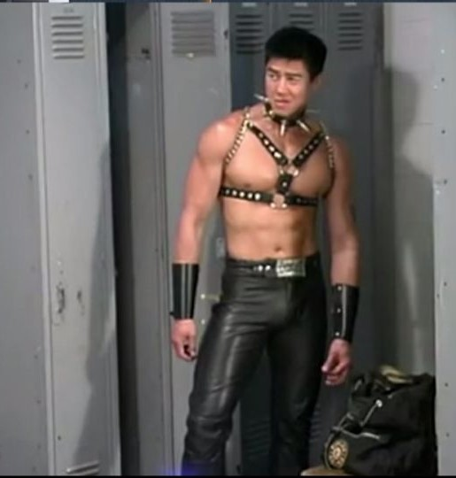

哲學這一個條目起源於一段比利·海靈頓的摔跤影片，其過程中的動作跟叫聲都很具特色，後來這段影片開始作為素材被惡搞後開始聲名大噪，後來基本上由比利為首的各個人物便開始被加入鬼畜全明星之中。值得注意的是，這個次文化不只有在亞洲地區流行，而是在世界各地都有樂在其中者。像是17年的週年紀念影片就有來自幾乎20個國家的參與者共同製作。
以下我舉出其中比較出名的兩名人物做簡易的介紹。
比利·海靈頓
|
也稱比利王，出生於美國紐約長島，前美國男男片演員。 |
范·達克霍姆
|
是一位越裔美國男男片演員、導演及攝影師；還曾經為一個R18遊戲配音。 |
 |